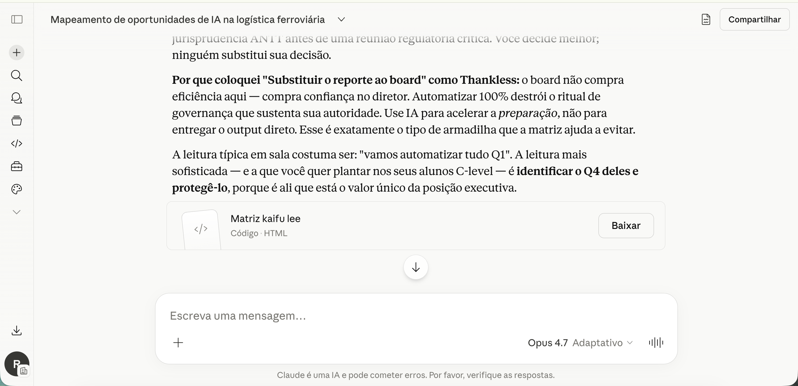
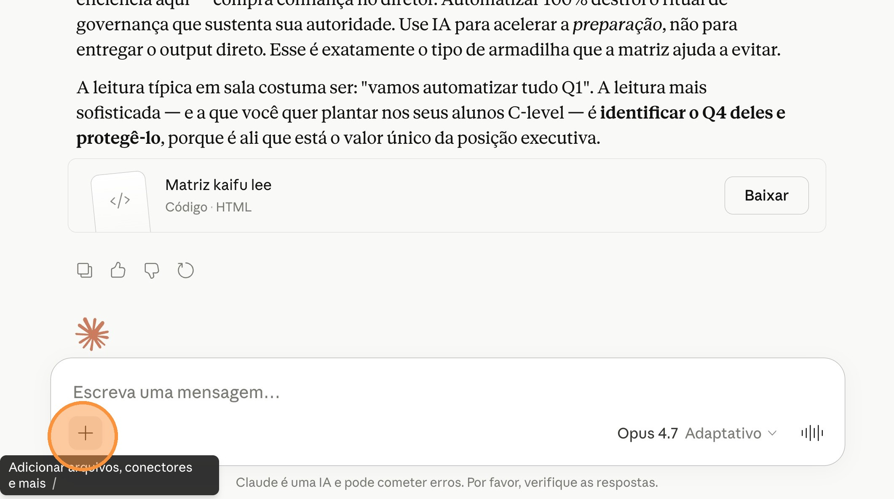
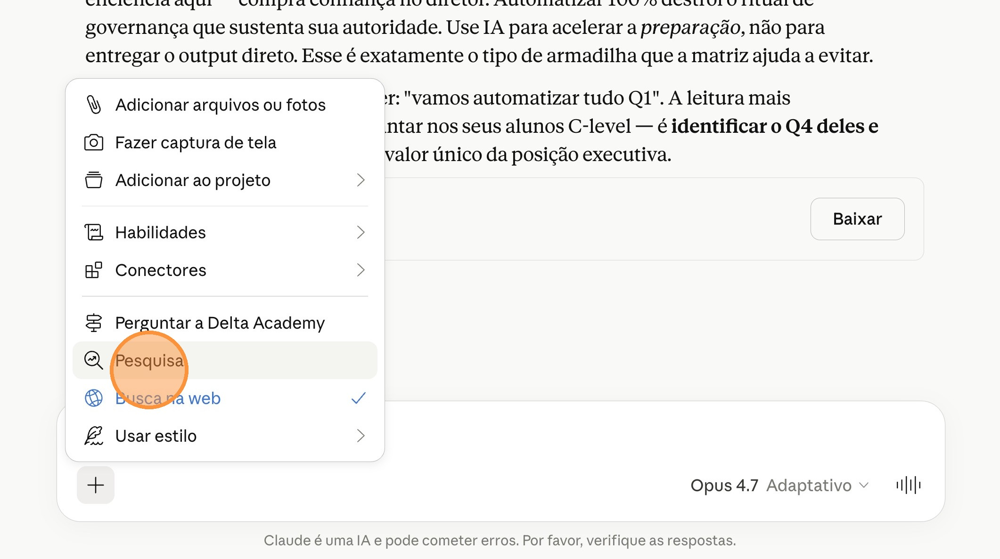
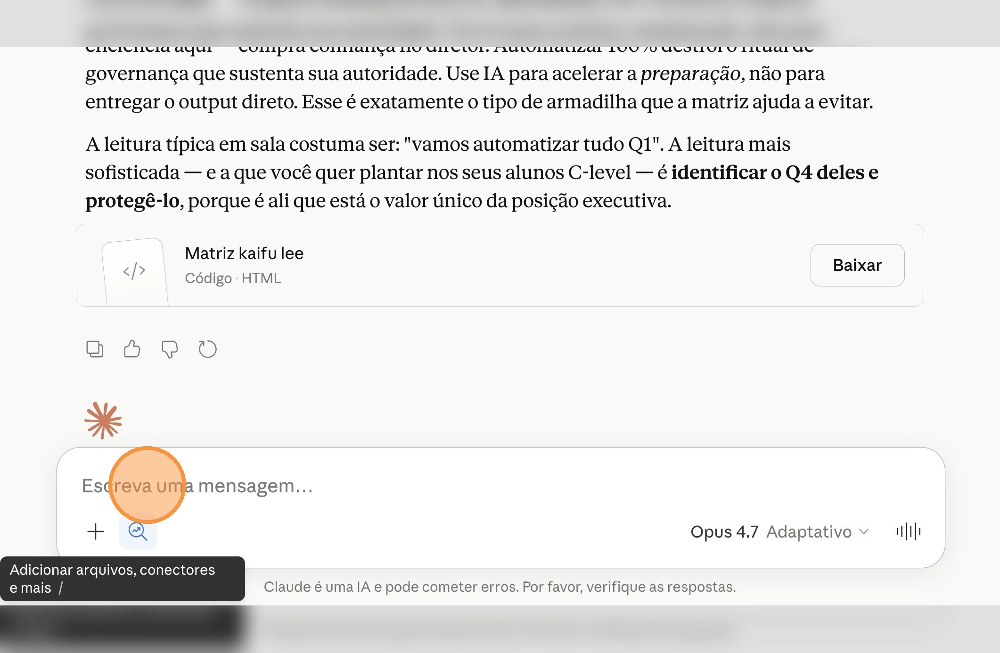
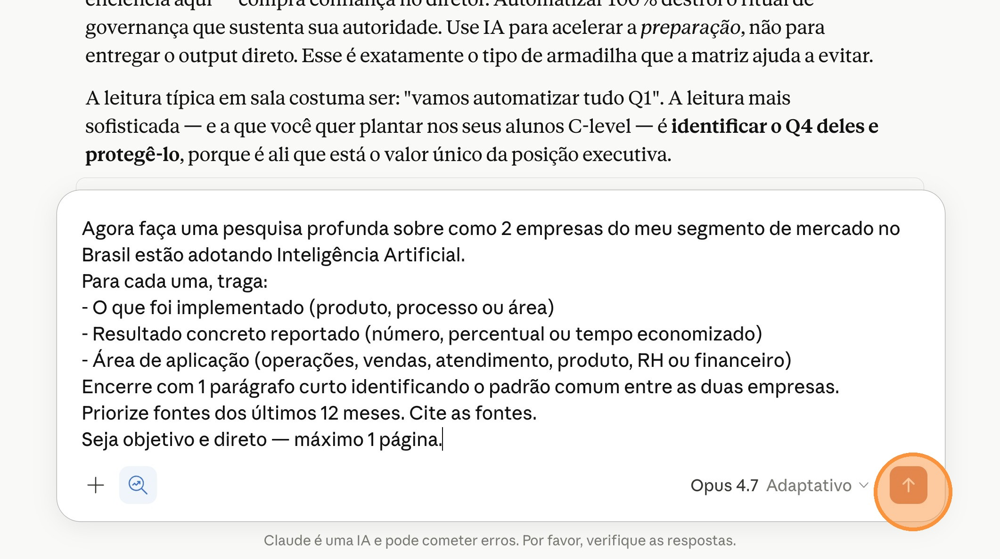

Segunda atividade prática do DELTA BOARD. Você vai usar o Deep Research do Claude (modelo Opus 4.7) para mapear como concorrentes do seu segmento estão adotando AI no Brasil — e transformar isso em um briefing executivo de inteligência competitiva, pronto para uma reunião de board.
Ficha técnica
Tipo
Demonstração + Atividade Prática
Duração da prática
8 minutos
Bloco
04 — Como usar AI · Segunda atividade
Técnica de AI
Deep Research (Pesquisa Profunda)
Ferramenta
Claude (modelo Opus 4.7) com Deep Research
Pré-requisito
Ter completado a AP01 e mantido o chat do Claude aberto
Entregável
Briefing executivo de inteligência competitiva (2 empresas + padrão estratégico)
Antes de começar, veja o que você vai conquistar ao final desta atividade prática
Entregável final: Relatório executivo de inteligência competitiva.
Um briefing executivo gerado pelo Deep Research mapeando como 2 empresas reais do seu segmento estão usando AI — com resultados concretos, fontes citadas e padrão estratégico identificado.
Prévia do entregável
Adoção de AI no setor de logística ferroviária — Brasil
EMPRESA 1Rumo Logística
ImplementadoSistema de previsão de manutenção de ativos via AI
ResultadoRedução de 23% em paradas não programadas
ÁreaOperações
FonteRelatório anual Rumo 2025
EMPRESA 2MRS Logística
ImplementadoOtimização de carga via algoritmos de roteirização
Resultado+15% de utilização da capacidade
ÁreaOperações + Comercial
FonteValor Econômico (Mar/2025)
Padrão comum
Ambas começaram pela área operacional com casos de uso de eficiência mensurável (manutenção e roteirização) antes de avançar para áreas comerciais.
Introdução
02. Objetivo de aprendizagem
O que você vai aprender e produzir nesta atividade
Usar o Deep Research do Claude para mapear como concorrentes do seu segmento de mercado estão adotando AI e quais resultados concretos já conseguiram — transformando isso em inteligência estratégica para a sua empresa, em formato de briefing executivo pronto para o board.
Introdução
03. Conceito — Deep Research
A diferença entre uma busca comum e uma pesquisa profunda
Uma busca comum no Google te entrega links para que você possa abrir e analisar o conteúdo de cada um deles, o que pode levar um tempo considerável de pesquisa. Já o Deep Research (Pesquisa Profunda) faz algo diferente: o Claude navega autonomamente por dezenas de fontes, lê, analisa e sintetiza tudo em um único relatório estruturado. Em minutos e não em horas.
É como se um analista júnior tivesse pesquisado por 3 horas e te entregado um briefing executivo pronto. O resultado não é uma lista de links — é um documento com contexto, comparações e conclusões, pronto para uma reunião de board.
Comparativo visual:
Prompt comum
"Quem está usando AI no setor de logística no Brasil?"
Resposta vai ser uma lista de empresas conhecidas com casos genéricos, sem dados concretos, sem fontes verificáveis.
Deep Research
Mesmo prompt + modo Deep Research ativado
Claude pesquisa em dezenas de fontes, cita os artigos, traz números concretos (como "redução de 23%") e identifica padrão comum entre empresas. Pronto para apresentar.
Insight
O Deep Research troca tempo de pesquisa por tempo de processamento — você espera uma vez, usa o relatório por meses.
Demonstração
04. Prompt simples — sem Deep Research
O que o Claude entrega sem Deep Research ativado
Aviso
Os prompts a seguir (04 e 05) são apenas para ilustração durante a aula expositiva. Você não precisa testá-los agora — você terá sua própria atividade prática logo depois desta seção.
Veja primeiro o que o Claude entrega sem Deep Research ativado, usando uma pergunta simples:
Prompt sem Deep Research
Quem está usando AI no setor de logística no Brasil?
Resposta esperada
Lista de empresas conhecidas com casos genéricos, sem dados concretos e sem fontes verificáveis.
Demonstração
05. Prompt com Deep Research
Mesmo tipo de pergunta, agora com Deep Research e instruções estruturadas
Agora o mesmo tipo de pergunta, mas com o modo Deep Research ativado e instruções estruturadas para o Claude entregar um briefing executivo:
Prompt com Deep Research
Faça uma pesquisa profunda sobre como empresas do setor
de logística no Brasil estão adotando Inteligência Artificial.
Foque nas 2 empresas com os casos mais relevantes.
Para cada uma traga:
- O que foi implementado (produto, processo ou área)
- Resultado concreto reportado (número, percentual ou
tempo economizado)
- Área de aplicação (operações, vendas, atendimento,
produto, RH ou financeiro)
Encerre com 1 parágrafo curto identificando o padrão
comum entre as duas empresas.
Priorize fontes dos últimos 12 meses. Cite as fontes.
Seja objetivo e direto — máximo 1 página.
Demonstração
06. O que observar durante a demonstração
Os 4 sinais que diferenciam Deep Research de uma busca comum
1
O Claude abre e lê múltiplas fontes de forma autônoma — não é uma busca, é uma pesquisa.
2
O relatório chega estruturado, com empresas nomeadas e resultados reais citados com fonte.
3
O parágrafo final já é inteligência estratégica — não dados brutos.
4
O tempo de processamento é o custo da profundidade: você espera uma vez, usa o relatório por meses.
Atividade Prática
07. Inteligência competitiva do seu setor
Sua vez — gere um briefing executivo sobre como concorrentes seus usam AI
Você vai gerar um briefing executivo sobre como 2 empresas do seu segmento estão usando AI no Brasil. Continue no mesmo chat da AP01 — o Claude já conhece seu segmento, cargo e contexto, então o prompt vai ser mais curto e direto.
Duração total
8 min
estimado
Modelo recomendado
Claude Opus 4.7
Você vai continuar no mesmo chat da AP01, então o modelo já está em Opus 4.7. É o ideal para Deep Research porque sintetiza muitas fontes em conclusões executivas com profundidade.
💡 Janela de contexto
Por que continuamos no mesmo chat
Toda conversa com o Claude tem uma janela de contexto: o Claude lembra de tudo que foi discutido naquele chat. Como você acabou de dizer ao Claude na AP01 qual é seu segmento, cargo e responsabilidades, o Claude já sabe. Por isso esta atividade continua no mesmo chat da AP01 — o prompt fica curto e direto, sem você precisar repetir nada.
Atividade Prática
08. Passo a passo
6 passos para gerar seu briefing executivo no Claude
Passo 01 — Volte para o chat da AP01
Abra a janela do navegador onde está o chat do Claude usado na AP01. Não abra um novo chat — você vai continuar exatamente onde parou. Isso preserva a janela de contexto e o Claude já sabe do seu segmento e responsabilidades.

PRINT 01Chat da AP01 aberto — volte para a janela onde o Claude entregou o artefato da Matriz Kai-Fu Lee na AP01
Passo 02 — Ative o modo Deep Research
No campo de mensagem do Claude, clique no ícone de "+" para abrir o menu de ferramentas e selecione Pesquisa para ativar o modo Deep Research.

PRINT 02aAbra o menu de ferramentas — clique no ícone "+" no canto inferior esquerdo do campo de mensagem

PRINT 02bSelecione "Pesquisa" — ativa o modo Deep Research no Claude
Passo 03 — Copie o prompt abaixo
Use o botão Copiar prompt no bloco abaixo. O prompt foi simplificado especialmente para esta atividade: como você está continuando o chat da AP01, o Claude já sabe seu segmento — você não precisa preencher nada.
Prompt para Deep Research
Agora faça uma pesquisa profunda sobre como 2 empresas do meu segmento de mercado no Brasil estão adotando Inteligência Artificial.
Para cada uma, traga:
- O que foi implementado (produto, processo ou área)
- Resultado concreto reportado (número, percentual ou tempo economizado)
- Área de aplicação (operações, vendas, atendimento, produto, RH ou financeiro)
Encerre com 1 parágrafo curto identificando o padrão comum entre as duas empresas.
Priorize fontes dos últimos 12 meses. Cite as fontes.
Seja objetivo e direto — máximo 1 página.
Prompt copiado. Cole no chat do Claude da AP01 com Deep Research ativado.
Passo 04 — Cole o prompt no Claude e envie
Volte para o chat do Claude. Cole o prompt copiado (Cmd+V no Mac ou Ctrl+V no Windows) e clique no botão de envio. Confirme que o modo Deep Research continua ativado.

PRINT 04aCole o prompt — Cmd+V (Mac) ou Ctrl+V (Windows) no campo de mensagem do Claude

PRINT 04bClique no ícone de enviar — o Claude inicia o processo de Deep Research
Passo 05 — Aguarde a pesquisa
O processamento pode levar alguns minutos para terminar a pesquisa profunda. Acompanhe o que o Claude está fazendo nos bastidores: abrindo fontes, lendo artigos, cruzando dados e montando o relatório de forma autônoma.
Observação sobre o tempo
Segundo a documentação oficial do Claude, uma pesquisa profunda pode durar de 1 a 45 minutos, dependendo da complexidade e do volume da pesquisa. Nesta atividade, a pesquisa deve levar em média de 3 a 5 minutos porque pedimos apenas 2 concorrentes. Se depois da aula você quiser fazer uma pesquisa com mais concorrentes (5, 10), basta alterar a quantidade no prompt — só leve em conta que o tempo de processamento será proporcionalmente maior.
Passo 06 — Analise o resultado
Quando o relatório estiver pronto, leia atentamente o briefing gerado pelo Claude. Observe:
As 2 empresas mapeadas
Os resultados concretos reportados (números, percentuais, tempo economizado)
As áreas de aplicação identificadas
O padrão estratégico comum entre as empresas
Não precisa salvar agora
Você não precisa baixar nem salvar o relatório agora — na AP03 você vai usar o próprio chat para gerar um resumo aproveitável como insumo do seu Project personalizado.
Atividade Prática
09. O que você tem ao final desta atividade
Os entregáveis e o contexto acumulado que ficam com você
Você sai desta atividade com:
✓
Um briefing executivo sobre adoção de AI no seu setor, com 2 casos reais de empresas e resultados concretos.
✓
Um padrão estratégico identificado entre as empresas do seu segmento, pronto para discutir no seu time.
✓
Um chat com contexto rico acumulado (cargo, segmento, responsabilidades, mapeamento Kai-Fu Lee e inteligência competitiva) — pronto para virar insumo do seu Project na AP03.
Próximo passo
Mantenha o chat aberto. Na AP03 (Projects) você vai pedir ao Claude — ainda no mesmo chat — para resumir tudo que ele aprendeu sobre você nas APs 01 e 02. Esse resumo vai virar o System Prompt do Project, e os outputs das duas APs vão virar arquivos de contexto.